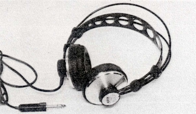
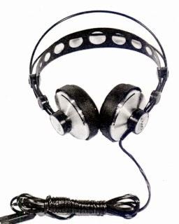
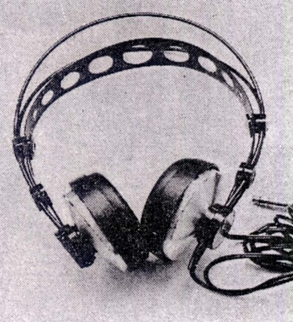
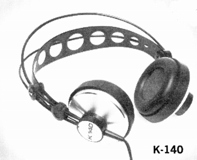
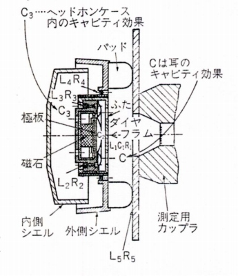

K140カルダン
 


■価格 8,200円
■型式 ダイナミック型
■振動板
■インピーダンス 600Ω
■再生周波数帯域 20-20,000Hz
■許容入力 250mW
■感度 112ｄB/50mW
■コード 3m
■重量 175g（コード含まず）
■発売 〜1975年頃
■販売終了 ?
■備考
ラジオ技術
1975年6月号に記載
パイオニアエンタープライズが代理店に加わる直前の時期と思われる。
パイオニアエンタープライズの扱いのK140/4と同じ機種と思われる。
なお、1975年春版のアメリカ版カタログでは、定価34.50ドルとなっている。
「カルダン」は鉄道などに利用されるカルダン式継手に由来か？
近年,AKGの関係者がヘッドフォンのカプセル支持方式の特許出願を行っているが、
そのなかで「カルダンマウント」という言葉がでている。

（断面図）
AKGのインデックスへ